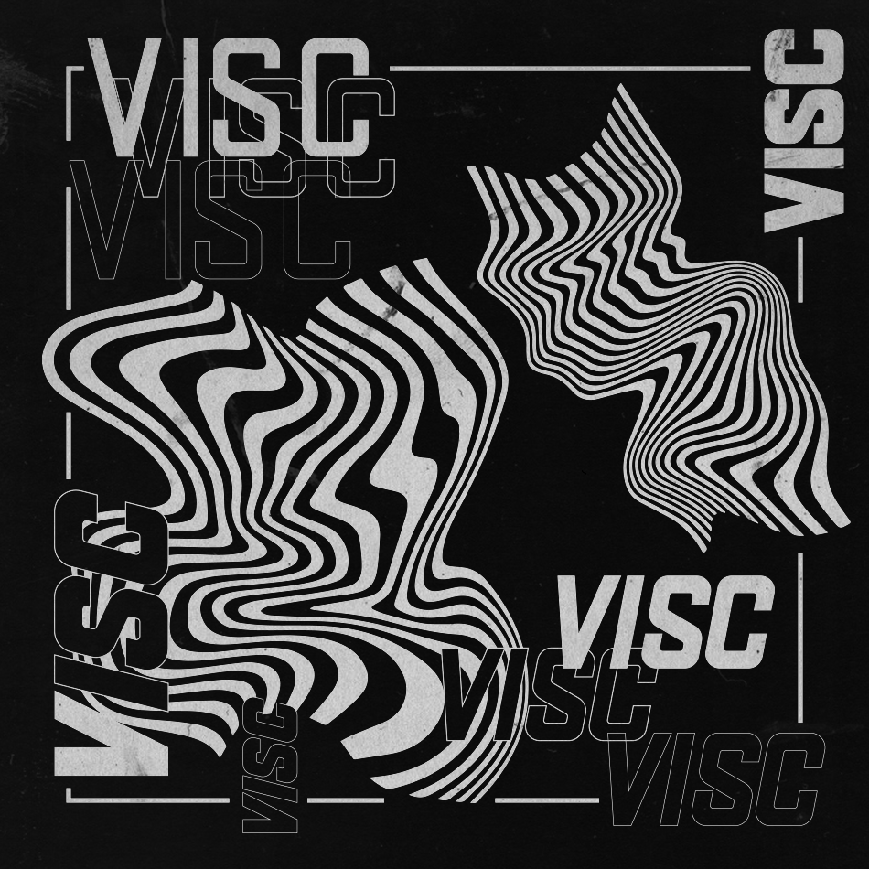

> Title : Visc
> Project info : Visc is an under progress typeface.


> Extra : Consider using Visc in your projects
> Project info : Visc is an under progress typeface.
> Extra : Consider using Visc in your projects